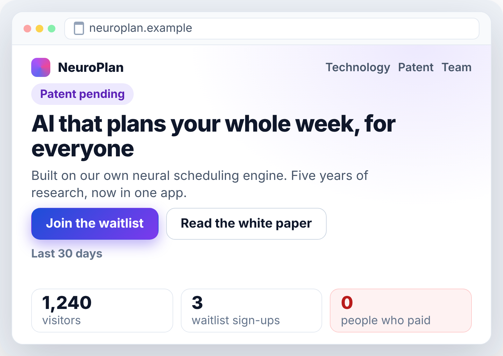
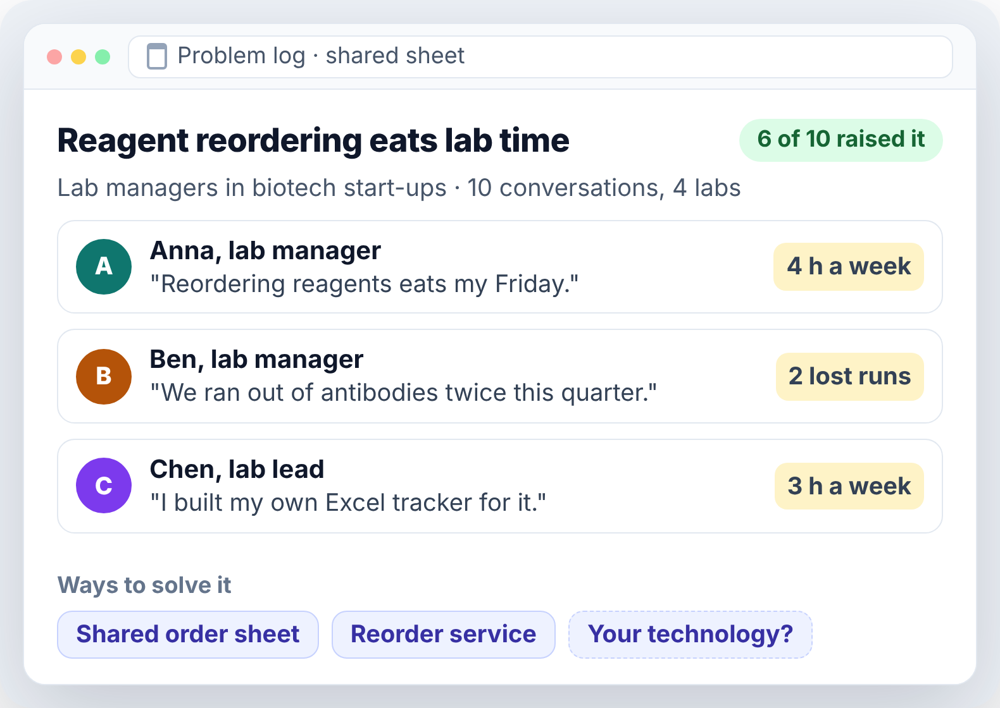
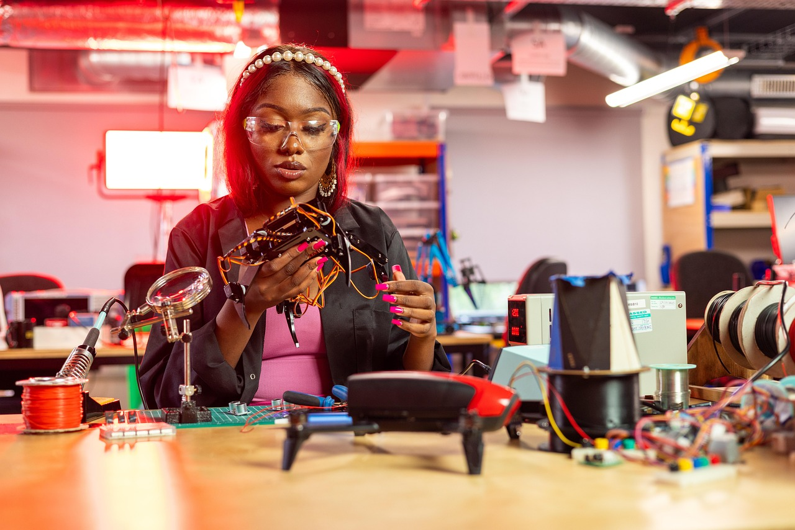
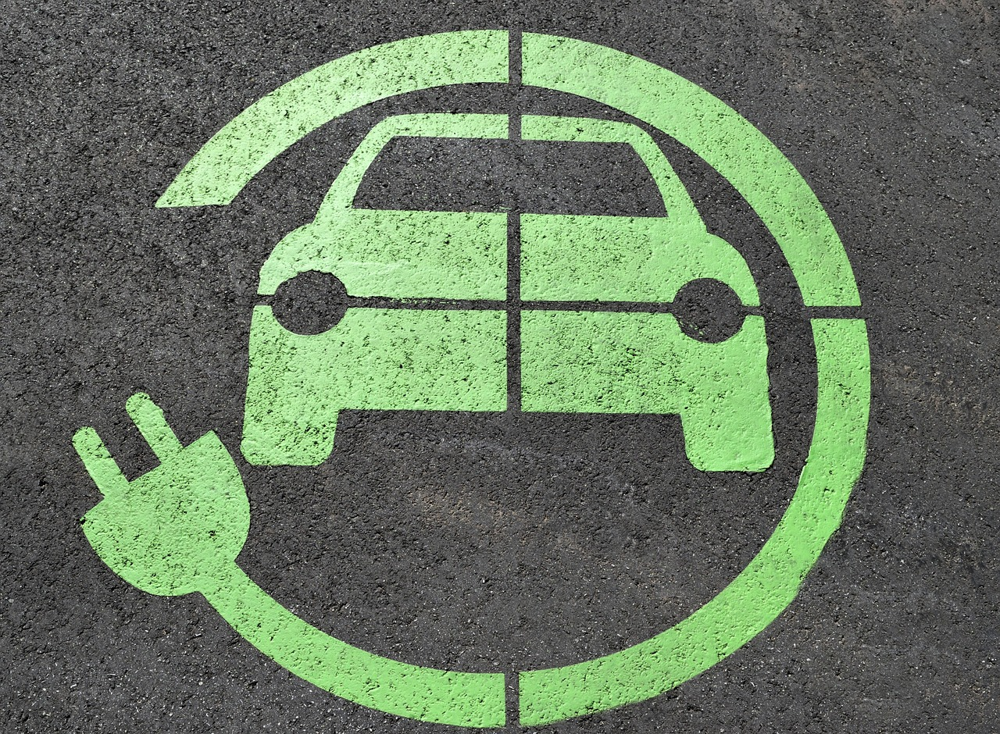
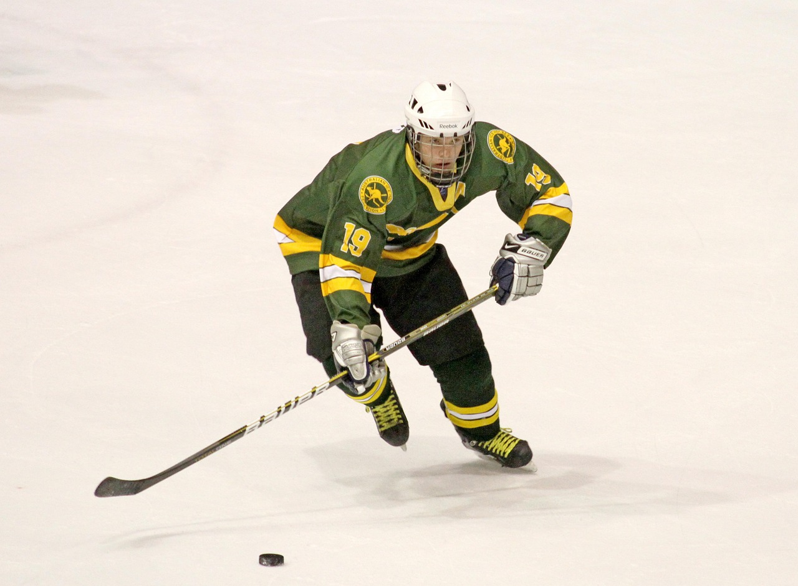
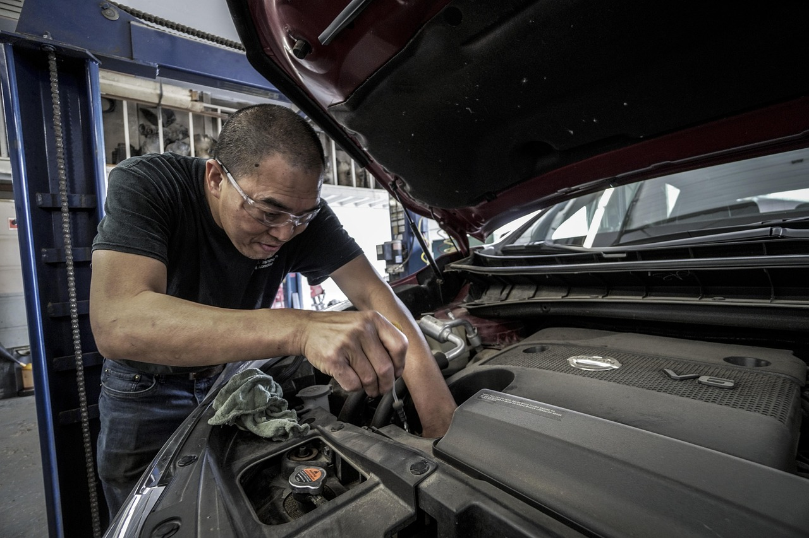
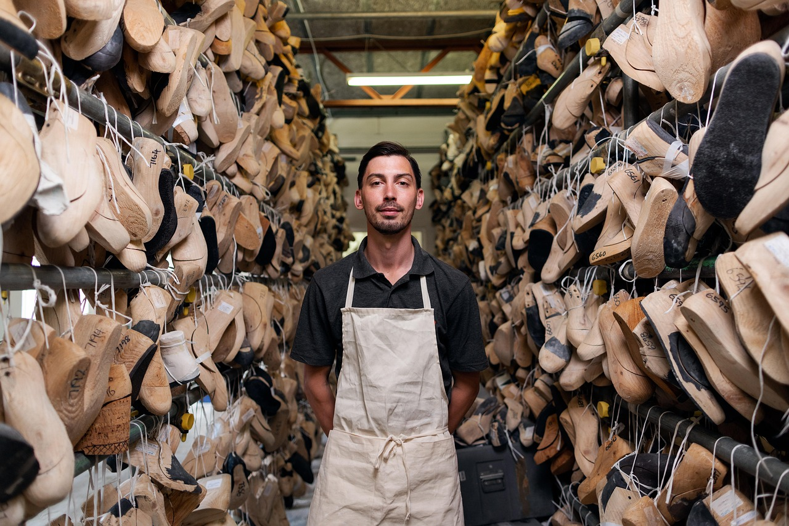
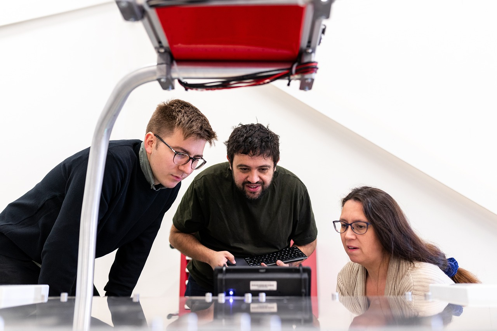
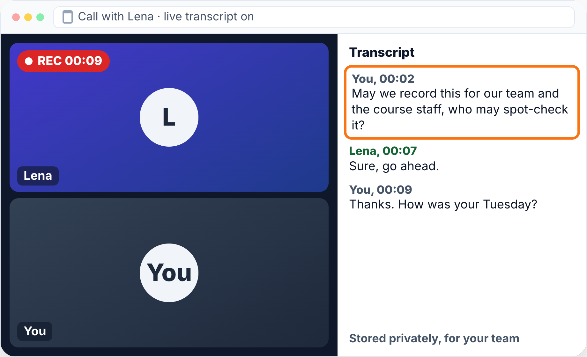
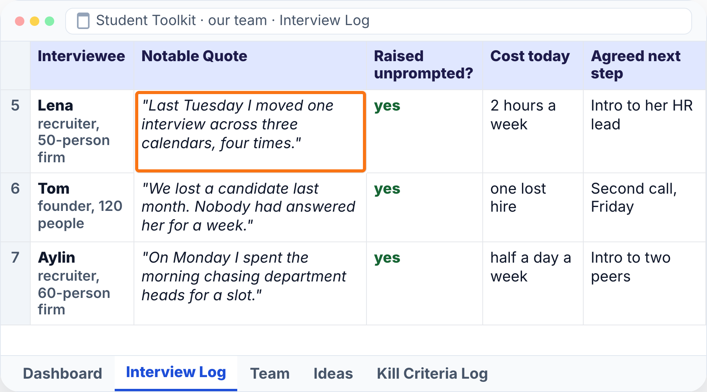

1Open the link github.com/BaNburger/AmbitiousEntrepreneurship
2Go to modules then 02-finding-ideas
3Click the lecture PDF M02_Lecture_Finding-Ideas.pdf, download top right
Where we are · the course
From your team to one idea
Thirteen sessions from first idea to first revenue. What teams have by now:
A team with its agreement Team (M01)
Talks in a shared problem space Team (M01)
Problem hypotheses, first quotes Kickoff (M00)
Check-in · Show of hands
How many conversations did you hold?
Per student, held only: a named person and one quote in your log
0not yet
1–4startedunder the floor of 5
5–9floor reached
10+full bar10 per student
Pivot or persevere
Under your line? That is a decision, not a failure
Before you have a solution, a pivot goes back to the problem space
Accountability
Report what you did, not what you planned
Chapter 1 of 9
Previously on Ambitious Entrepreneurship
You became a team, and today you pick the problem you test next.
Previously · Kickoff (M00)
Start from a problem, not from your technology
Technology first a product looking for a problem

Problem first a problem looking for the best way to solve it

Previously · Team (M01)
Your team already narrows your ideas
Today's question · hands
Where did your problem space come from?
Your own itch

What you know

A shift in your field
Something missing
Chapter 2 of 9
Your presentations
Three minutes per team to show us what you heard, not what you plan.
Your presentations · make it credible
Show us where you're at in 3 minutes or less!
Facts
Statistics or research
Where people in the space complain, with links
12
Numbers
Usage or surveys
Conversations per student, problems heard, hours each founder committed
Quotes
Interviews
The three that surprised the team most
Images
Screenshots or users
The team's skill bars side by side, from the Team sheet
Agreement: startup or small business and why, and the line you argued about longest
What did you do?What did you learn?How can we help?
Input 1 of 4 · Chapter 3 of 9
Spot it: ideas are noticed
Stop inventing ideas and start noticing problems where they show up early.
Input 1 of 4 · Spot it · three questions
Where do good ideas come from?
1
Where do startup ideas come from?
2
How do you see problems before others?
3
How do you write one down?
The way to get startup ideas is not to try to think of startup ideas. It's to look for problems, preferably problems you have yourself.
Paul Graham, How to Get Startup Ideas, 2012
His own miss, 1995Art galleries online. Galleries didn't want to be
Where ideas come from
Problems show up early in four places
Your own itchWhat annoys you every week?What you knowYour field, your tech, your jobsA shift in your fieldWhat just became possible?Something missingWhat do you wish existed?
[who] struggles with [what]a problem someone has, not a product
The strongest door
Start from what your team knows best
Years in an industry about double your odds of a top startup in it
I skate to where the puck is going to be, not where it has been.
Steve Jobs, quoting Wayne Gretzky, at the end of the iPhone keynote, Macworld, 9 January 2007

Reacting
StudiVZ won until the original arrived
The German copy of a San Francisco product, 2005 to 2022
Looking ahead
Picture the world in five years, then its problems
A hypothesis about the world. It ends in a person's problem, not in a technology
Future hypothesis 1 · computing
If agents use the software, who is the user?
The shift has started. The consequences are open
Agents use software for usTask length they finish doubles every 7 months
The webAgents browsing like people grew 15x in 2025
Cloudflare
AppsMCP since Nov 2024, close to half a billion SDK downloads a month by Jul 2026
MCPAnthropic
PaymentsAgent payment protocols since Sept 2025
GoogleStripe
Devices, OSYour hypothesis
Future hypothesis 2 · mobility
Cars go electric and driverless. What breaks?
World
1 in 4 new cars is electricincluding plug-in hybrids, 2025
500,000 paid rides a weekno driver, 10 US cities, March 2026
Taxis without drivers?Fuel stations?

Repair shops?The grid at 6 pm?
The bet
Most fail either way. Only the winners differ
Failure is the default. Followers or leaders is the choice
Lead users
Live where the problem shows up first
Riders built the mountain bike years before anyone sold one
Mountain bikers19% of 291 riders had built or changed their own gear
From product to problem
Write the problem, not the product
Product
"Software for recruiters to schedule video calls"
Problem
"Recruiters struggle with scheduling calls with applicants and departments"
[who] struggles with [what]. No product words.
Now you · alone · 3 minutes · no product words
Write the problem you heard most
Output
One sentence, one source
Input 1 of 4 · Spot it · the answers
Spot it: notice problems, don't invent ideas
1
Where do startup ideas come from?
From problems you notice: your itch, what you know, a shift, something missing
2
How do you see problems before others?
Picture the world in five years, and find lead users who have it today
3
How do you write one down?
As [who] struggles with [what], with no product words
Input 2 of 4 · Chapter 4 of 9
Sort it: think big, test small
Go wide and big alone, then let small tests with real people pick one.
Input 2 of 4 · Sort it · three questions
How do you get from many ideas to one?
1
How do you get big ideas?
2
How do you cut without thinking small?
3
What may you score?
Why it matters
Same 30 minutes. Think alone first
44 students in groups of four, one lab task
Team
30 min together
Hybrid
10 min alone20 min together
0102030 minutes
Hybrid gets about 3× the ideas, and better best ideas
Cornerstone · finding ideas
Think big, test small
The test stays small so you learn fast. The idea never has to
Think big · a day in five years
In five years, a buyer's week is one line, one yes and one lunch
One line1One yes2One lunch3
Before round 1:picture your user's day in five years. What is gone? What is new? Who struggles?
How-to · Crazy 8s
Eight ideas, eight minutes, one sheet
1 minute per panel
Alone, in silence
Each panel:
[who] struggles with [what]
Round 2 · think like an artist
Artists pick their constraints
A rule you choose takes you where you would never go
e
A whole novel without it
Georges Perec, La Disparition, 1969
Picasso, 1901 to 1904
Blue Period: blue as the main colour
Ravel, Boléro, 1928
one rhythm, one melody, one long crescendo
Oulipo, Paris, 1960
writers and mathematicians who write under rules
Your round 2:people you can reacha field you knownothing you'd refuse to build
A tier list of startup ideas
Aim for S. Stay out of the tarpit
Thought experiment: in one sentence, what do all tarpit ideas share? All wrapper-zone ideas? What separates S from D?
SMoonshots
The next GoogleIndustrial capabilities in space
AUnsexy plumbing
Compliance paperwork for small factoriesAI-native compliance infrastructure
BCrowded trades
Yet another AI note-taker
CWrapper zone
Chat with your filesCopilot for dog walkers
DTarpit ideas
Restaurant & event discoveryAn app to plan hangouts with friendsTrading tools for day traders
F
Fridge inventory appA social network for pet ownersInvesting your friends' money on Reddit tips
The DVF gate
The gate scores evidence, not ambition
Feasible means you can test it in two weeks, not build all of it
True whenScore 1 to 5Evidence
Desirable
Someone you talked to had it recently
12345
heardassumed
Viable
Someone spends money or time on it today
12345
heardassumed
Feasible
You can reach them and test within two weeks
12345
heardassumed
Every score heard (name the person) or assumed. 5 for several named people, 1 a pure guess
How it looks · your Ideas sheet
Every score names who told you
You never type this. Your agent fills it from the talk
Your agentskill: score-ideas
Three new talks, names swapped. Fill the Ideas sheet. Name who told us. Whatever nobody said stays assumed. lena-call-transcript.txttom-notes.mdaylin-notes.md
Done, rows 7 and 8. Next question for Tom: who pays today?
Row 7, desirable4heard: Lena, Tom, AylinRow 7, viable3heard: Lena, 2 hours a weekRow 8, viable2assumed: nobody said who pays
Reply…
Now you · in pairs · 3 minutes
Heard or assumed? Ask who told you
Desirable
Who had it recently?
heardassumed
Viable
Who spends on it today?
heardassumed
Feasible
Whom can you reach in two weeks?
heardassumed
Output
Three marks, heard or assumed
General to specific
Make it specific. Who, and what exactly
Specific is not small. It is where a big idea starts
Input 2 of 4 · Sort it · the answers
Sort it: think big, test small
1
How do you get big ideas?
Alone first, eight in eight minutes, under constraints you pick, aiming for S, the moonshots
2
How do you cut without thinking small?
On what people told you. Your scores pick your next test, never the size of the idea
3
What may you score?
Only what you heard: desirable, viable, feasible, each heard or assumed
Input 3 of 4 · Chapter 5 of 9
Pick it: a problem you want to have
Pick the problem your team is built for, say why in one to three sentences, and defend it.
Input 3 of 4 · Pick it · three questions
Which problem is yours?
1
Which problem is worth picking?
2
What makes it yours?
3
How do you say and test it?
The very best startup ideas tend to have three things in common: they're something the founders themselves want, that they themselves can build, and that few others realize are worth doing.
Paul Graham, How to Get Startup Ideas, 2012
All began this way
MicrosoftAppleGoogleFacebook
Cornerstone · selecting a problem
Pick the problem where all three overlap
Unique insight
Your insight is what others find weird

Unique insight
Why do other people think you're weird?
What is something unique you do or know?
Apprenticeship or schoolPersonal convictionCV or personal historyTechnical knowledge
Problem worth solving
Worth years of your life, and their money
Problem worth solving
What is worth solving for you?
Is the problem big enough so you can serve many people?
Does it improve the lives of people around you?
Do you desire a world with this problem solved?
Is someone willing to pay for it?
Executable by the team
Your team must build it and sell it

Executable by the team
Why are you uniquely suited for this challenge?
PassionDeterminationSkillsExperience
What investors rank
Investors back the team before the idea
Techstars ranks what it looks for, in this order
Your early-stage pitch
Say it in one to three sentences
AI critics
AI agrees with you. Make it attack
Each attack is a question for a real person. Critics never count as evidence
How-to · AI critics
One prompt, three critics
Your chat assistant
Business Idea: {Insert business idea}
You will generate increasingly concise summaries of the business idea above.
Repeat the following 3 steps 3 times.
Step 1: From the perspective of a potential customer, feedback the idea in terms of desirability. What problem does it solve? How are you solving the problem currently? When would you like to use it? What is missing from the idea? What is unnecessary? How much are you willing to pay for it? How does it compare to other ways of solving your problem? Think step by step and explain your reasoning.
Improve the idea according to your feedback.
Reply…
1Customer: desirability
2Experienced founder: business value
3Venture capitalist: growth
Paste it into the chat assistant you use. Then ask real people.
Cornerstone · hierarchy of evidence
AI critics are not on the pyramid
AI critics
Now you · in pairs · 3 minutes
Find your weakest circle. Defend it
Output
Your weakest circle, and what would fix it
Input 3 of 4 · Pick it · the answers
Pick it: where all three overlap
1
Which problem is worth picking?
Where unique insight, a problem worth solving and an executable team overlap
2
What makes it yours?
An insight others find weird, and a team that can build it and sell it
3
How do you say and test it?
In one to three sentences, attacked by AI critics, then by real people
Input 4 of 4 · Chapter 6 of 9
Test it: the Mom Test quickstart
Ask about the last time it happened, never about your idea, and let what you hear change it.
Input 4 of 4 · Test it · three questions
How do you hear the truth?
1
What do you ask about?
2
Which questions work?
3
What do you do with the answers?
The Mom Test
Talk about their life, not your idea
Your idea
"Would you use an app that does X?"
Their life
"How do you currently handle X? Walk me through the last time."
The future
"Would you pay $10/month for this?"
The past
"What did you spend on solving this last month?"
Pitch your momShe says yes, she loves you
30%
Talk less than 30% of the time
Five questions
Ask for the story of the last time
1
Tell me about the last time…
2
What was the hardest part?
3
Why was that hard?
4
How do you solve it today?
5
What don't you love about that?
Then: tell me about another time.
Now you · in pairs · 3 minutes
Fix three questions. Ask about the last time
Output
Three last-time questions
Recording
Record it. Ask first
From
Hit record and hope nobody minds
Before you hit record
"May we record this for our team and the course staff, who may spot-check it?"
Store it privately. Delete it if someone asks. Take out names before any AI tool sees it.

Anchor · Build-Measure-Learn
What you hear changes the idea
Update your pitch and scores every 3 talks
Input 4 of 4 · Test it · the answers
Test it: ask about the last time
1
What do you ask about?
Their life and the past, never your idea or the future
2
Which questions work?
The story of the last time: hardest part, why, how they solve it today
3
What do you do with the answers?
Record them with consent, and update your pitch and scores every 3 talks
Chapter 7 of 9
Wrap-up and check-out
Two pictures, three reflections, 15 problem conversations per student until next time, and what a good result looks like.
Recap · cornerstone
Your pitch is the star
Recap · cornerstone
From today, the bottom steps
Reflection 1 of 3 · the content
What could you apply?
🛠️
What could you apply?
🤕
What gave you a hard time?
Reflection 2 of 3 · the process
Man vs. machine
🤖
Where did AI actually help you?
🧠
Where was your genius needed?
🕴️
What are your best hacks to share?
Reflection 3 of 3 · the results
Rose, thorn, bud
🌹
What was the breakthrough today?
🌵
What was the hardest part today?
🌱
What is an idea/feature you didn't have time to finish, but want to explore later?
Homework until next time
Hold 15 problem conversations per student about the problem behind your chosen idea.
15each
The learning floor is 5 conversations per student.
Log your kill line before your first conversation, and check it first on your midweek day. A kill line is a result you count, a date, and what you do if you cross it, written down before the data comes in.
Homework · how to do it · 1 of 2
Start close. Never pitch
1
Start close. Your Interview Log, intros, people you see every day. AI deep research and review sites like G2 show where the rest talk.
2
Open on their day, let them raise it, then ask about the last time. Never pitch.
Watch out. Name the problem first, and it isn't unprompted.
3
Change the idea on what you hear. Rescore every 3 talks, and switch the day your kill line is crossed.
Homework · how to do it · 2 of 2
End with an ask. Record it
4
End with an ask, a second call or an intro. Each yes is a first prospect.
5
Record with the consent sentence in Legal Basics.
6
Get a blind second opinion. Give an AI your raw notes, minus your idea and personal data. Ask what people raised on their own, and note where it disagrees.
Watch out. AI critics and personas are practice and never count.
It all lives in your Student Toolkit.
Interview LogIdeasKill Criteria Log

Your agentskill: log-interview
Today's call, name swapped. Add the row to the Interview Log. Quote her exact words. lena-call-transcript.txt
Row 5 added. Quote word for word, raised unprompted, 2 hours a week, next step an intro to her HR lead. Nobody named a price, so I left that out.
Reply…
Homework · what you come back with
Good is named, specific and quoted
GOOD
WEAK
Idea
“Recruiters at 50-person firms struggle to book interviews across three calendars.”
“AI for HR.”
Pitch
One of us booked 40 interviews a month by hand, and recruiters told us what a lost candidate costs.
Encyclopaedia Britannica. Pablo Picasso, Blue Period and Lipogram. Wikipedia. Oulipo. Accessed 2026-10-30. Calvocoressi, M. D. (1931, July 11), on Ravel's Boléro. The Daily Telegraph.
Caldwell, D., & Seibel, M. Tarpit ideas, YC videos. Y Combinator. (2026). Requests for startups. Sources of the tier list, as in Kickoff (M00).
Go talk to people. See you next time!
Module 02 · Finding Ideas · Workshop · 90 minutes
Workshop: Stress-test your ideas
Ninety minutes from many ideas to one, with a first conversation before you leave.
Where do startup ideas actually come from?
Workshop · step 1 of 3
Many ideas, in silence
1STEP 1 · 25 MIN
MANY IDEAS, IN SILENCE
Every problem on paper before anyone judges one
3 min: sources from your log, itch, work, a shift in five years, a gap
8 min Crazy 8s: alone, silent, "[who] struggles with [what]"
8 min round 2: reachable people, your field, nothing you'd refuse
6 min: read out your three best, merge, tier S to F
Mark your top 5
Output 16 ideas each, a top 5Minutes 25
Workshop · step 2 of 3
One gate, then the critics
2STEP 2 · 35 MIN
ONE GATE, THEN THE CRITICS
Cut to one idea on evidence, and know why you are its team
10 min DVF gate: score your top 5 from 1 to 5
Every score heard (name the person) or assumed
8 min: make two specific, pitch each in one to three sentences
14 min: another team or an AI attacks as customer, founder, investor
3 min: choose one, rank two backups
Output One idea, its pitch, two ranked backupsMinutes 35
Workshop · step 3 of 3
Ask about the last time
3STEP 3 · 30 MIN
ASK ABOUT THE LAST TIME
Learn if people have it, without hearing your idea. Do NOT pitch.
2 min: log your kill line, checked midweek
8 min script: open on their day, let them raise it
Last time? Hardest part? Why? Fix today? Dislikes? Then ask
12 min: one live talk per team, or three booked
8 min: commit to the bar, midweek day and pace, send messages
Output Kill line, script, a first talk, targets, sent messagesMinutes 30
Arrived empty-handed?
No team? Join one today. No talks? Start from your own sources
Your own itchWhat you knowA shift in your field
[who] struggles with [what]
Something missing
Assumed scores are your Step 3 questions.
Homework until next time
Hold 15 problem conversations per student about the problem behind your chosen idea.
15each
The learning floor is 5 conversations per student.
Log your kill line before your first conversation, and check it first on your midweek day. A kill line is a result you count, a date, and what you do if you cross it, written down before the data comes in.
Go talk to people. See you next time!
Module 02 · Finding Ideas · Case discussion · about 90 minutes
Case discussion
You prepared the case at home, and now we argue the decision the founders faced.
Where do startup ideas actually come from?
Case · Engert, Schwämmlein and Krauss · Munich, summer 2011 · information horizon 30 June 2011
Three Friends and a Promised Market
The decision, as Engert recalled it
Finish the doctorates and go back into consulting, stay with the secure jobs, or make the jump?
No source dates the point at which the three decided.
Case · timeline
What the three could know by 30 June 2011
1934
Passenger Transport Act. New domestic long-distance bus lines allowed only if existing transport did not suffice
2009
Coalition agreement of CDU, CSU and FDP promises to allow scheduled long-distance buses
August 2009
Deutsche Bahn starts its first international long-distance coach line, Nuremberg to Prague, on a link where it had stopped running trains about five years earlier
24 June 2010
Federal Administrative Court. A permit authority may weigh much lower bus fares decisively
6 July 2010
Government answer. It expects the market to develop. Beyond a sensitivity analysis, no further study of liberalisation scenarios has been carried out
11 March 2011
Consumer federation comments on the draft law that liberalises long-distance buses
April 2011
Deutsche Bahn loses a case against the bus car-pooling service DeinBus
May 2011
Deutsche Bahn says it will not appeal and that the government plans a new law
June 2011
Deutsche Bahn's board calls off a planned bus offensive. It runs more than 50 long-distance bus lines
Summer 2011
Engert and Schwämmlein, consultants who had begun doctorates, and Krauss, who had worked as a software developer at Microsoft, share the wish for a company of their own
Case · board plan
Three boards. Problem, criteria, fit
Left
A problem someone has
The one-sentence problems, who has it, and a column per fact, person, document or assumed.
Middle
Criteria and scores
The criteria read off Exhibit 3, then desirability, viability and feasibility with heard or assumed beside each.
Right
Fit and attacks
Three fit sentences, the strongest line of a traveller, a fellow founder and an investor, and the two vote counts at the bottom.
Case · vote 1 of 2 · raise a hand
On this evidence, would you give up your own job or degree?
Option A
Finish the doctorates and go back into consulting
Option B
Stay with the secure jobs
Option C
Make the jump
Case · Exhibit 1 · 1 of 3 · rules and reform, 1934 to June 2011
Read your one-sentence problem. Who has it?
Date, event, stated by, kind of source
1934Passenger Transport Act. New domestic long-distance bus lines allowed only if existing transport did not sufficeFederal governmentGovernment page
2009Coalition agreement of CDU, CSU and FDP. Coalition will allow scheduled long-distance bus services and amend section 13Green MPs quoting the agreementParliamentary paper
August 2009Deutsche Bahn starts its first international long-distance coach line, Nuremberg to Prague, on a link where it had stopped running trains about five years earlierTravel magazinePress report
24 June 2010Federal Administrative Court. A permit authority may give decisive weight to much lower bus faresFederal government, citing the rulingParliamentary paper
Case · Exhibit 1 · 2 of 3 · rules and reform, 1934 to June 2011
Read your one-sentence problem. Who has it?
Date, event, stated by, kind of source
6 July 2010Government answer. It expects the market to develop. Beyond a sensitivity analysis, no further study of liberalisation scenarios has been carried outFederal governmentParliamentary paper
August 2010Deutsche Bahn announces about 120,000 passengers in a year on its Nuremberg to Prague coachRail passengers' association, reporting Deutsche BahnInterest group
11 March 2011Consumer federation comments on the draft law that liberalises long-distance busesConsumer federationAssociation statement
April 2011Deutsche Bahn loses a case against DeinBusNews agencyPress report
May 2011Deutsche Bahn says it will not appeal and that the government plans a new lawNews agencyPress report, date not settled
Case · Exhibit 1 · 3 of 3 · rules and reform, 1934 to June 2011
Read your one-sentence problem. Who has it?
Date, event, stated by, kind of source
June 2011Deutsche Bahn's board calls off a planned bus offensive. It runs more than 50 long-distance bus linesNews agencyPress report, date not settled
The two grounds on which permit authorities had to refuse a long-distance bus line, as quoted in 2010, follow.
Ground
Wording
1
The route can be served satisfactorily by existing means of transport
2
The line would take over tasks that existing operators or railways already perform, without a significant improvement of service
Case · Exhibit 2 · 1 of 2 · the market in numbers, 2010 to June 2011
Read your one-sentence problem. Who has it?
Item
Figure
Period
Stated by
Kind of source
Passengers in long-distance rail, Germany
126 million, 2.4 percent more than in 2009
2010
Federal Statistical Office, as reported by a trade magazine
Official statistic, second hand
Average long-distance trip by bus or rail
290 kilometres
2010
Federal Statistical Office, as reported by a trade magazine
Official statistic, second hand
Road-use costs caused by buses on federal motorways
EUR 0.09 per kilometre in 2010, EUR 0.10 in 2012, long-distance and regional buses not separated
Study of 2007
Federal government, in answer to a question on tolls
Parliamentary paper, a cost and not a toll
Passengers on Deutsche Bahn's Nuremberg to Prague coach
About 120,000 in one year
To August 2010
Rail passengers' association, reporting Deutsche Bahn
One side
Long-distance bus lines of Deutsche Bahn
More than 50
June 2011
News agency
Press report
Case · Exhibit 2 · 2 of 2 · the market in numbers, 2010 to June 2011
Read your one-sentence problem. Who has it?
Coach fare vs. train
Average coach fare compared with the train
About one third lower
Claim of an association
2011 · Consumer federation
Rail passengers, expected fall
3%
Expected fall of long-distance rail passengers after liberalisation
About 3 percent
One side
2011 · Deutsche Bahn's estimate, as the consumer federation reports it
Item
Figure
Period
Stated by
Kind of source
Bus companies in Germany
4,500, mostly mid-sized
Told in 2017
Engert
Recollection
Bus companies in Germany
Almost 5,000
Told in 2021
Krauss, hedged
Recollection
Trips of a Deutsche Bahn subsidiary between Hamburg and Berlin
14 or 15 a day
While long-distance lines were restricted, told in 2025
Engert
Recollection
Case · Exhibit 3 · 1 of 3 · how the three told the start
Which criteria cut a long list to one?
Teller, year and kind of source
Search for ideas and what mattered
Engert, 2016, university magazine
Worked on business ideas with his partners for years
Engert, 2017, newspaper
Wish for their own company had matured. Market analysis of 4,500 companies
Engert, 2025, podcast
Old-fashioned market of family firms where they could add a platform, a brand and technology
Schwämmlein, 2016, trade magazine
The magazine wrote that the three discussed what a liberalised market could offer
Schwämmlein, 2018, newspaper
An internet platform for a real business that matters in people's lives
Schwämmlein, 2018, podcast
A sector where digitalisation had no big role, plus a change of market structure
Schwämmlein, 2018, magazine
Something that digitalisation changes fundamentally
Krauss, 2017, regional portal
Thousands of ideas, from knitted socks to online portals
Krauss, 2017, podcast
Knew little about buses. Not another app but something tangible
Company-supplied text, 2018 and 2019, printed under both Krauss's and Schwämmlein's name
Met regularly in the following years and played through business models
WirtschaftsWoche, 2016, press account
A list that grew, 50 products and services run through models
Case · Exhibit 3 · 2 of 3 · how the three told the start
Which criteria cut a long list to one?
Teller, year and kind of source
How they came across the plan
Engert, 2016, university magazine
Heard of the coming opening while working on his doctorate
Engert, 2017, newspaper
The media reported that the market was to be liberalised
Engert, 2025, podcast
A half-sentence in the 2009 coalition agreement
Schwämmlein, 2016, trade magazine
The passage on opening the market in the 2009 agreement
Schwämmlein, 2018, newspaper
A bit of chance. The coalition agreement was the start
Schwämmlein, 2018, podcast
Stumbled over the deregulation while searching for ideas
Schwämmlein, 2018, magazine
A pause of about nine months in 2009, for fear the law might not come
Krauss, 2017, regional portal
Schwämmlein brought the news that the law was to be loosened
Krauss, 2017, podcast
Not mentioned
Company-supplied text, 2018 and 2019, printed under both Krauss's and Schwämmlein's name
Read of the plans in the 2009 coalition agreement
WirtschaftsWoche, 2016, press account
After a ski holiday in 2010 the two remembered announced liberalisations
Case · Exhibit 3 · 3 of 3 · how the three told the start
Which criteria cut a long list to one?
Teller, year and kind of source
What they said Deutsche Bahn said
Engert, 2016, university magazine
Took it for granted that Deutsche Bahn would take the market. It did not find the market attractive
Engert, 2017, newspaper
Not mentioned
Engert, 2025, podcast
Board said it did not find the market interesting, in 2011
Schwämmlein, 2016, trade magazine
Not mentioned
Schwämmlein, 2018, newspaper
Not mentioned
Schwämmlein, 2018, podcast
At some point Deutsche Bahn said it did not find it exciting
Schwämmlein, 2018, magazine
A board member said buses did not interest him, after which they resumed
Krauss, 2017, regional portal
Not mentioned
Krauss, 2017, podcast
Not mentioned
Company-supplied text, 2018 and 2019, printed under both Krauss's and Schwämmlein's name
Not mentioned
WirtschaftsWoche, 2016, press account
An announcement of 2011 not to expand was the spark
Case · Exhibit 4 · 1 of 2 · the three by period, 2005 to 2011
Read your fit sentence
Schwämmlein
Engert
Krauss
School and studies
Same school as Krauss, recalled 2018. With Krauss, IT consultancy founded 2005 and sold after two years, reported 2017
Organised ski trips with a friend that often filled a bus, recalled 2025
Same school as Schwämmlein, recalled 2018. With him, IT consultancy founded 2005 and sold after two years, reported 2017
Job before 2011
Strategy consultant, Munich
Consultant, Munich
Microsoft, Munich, after automotive development
Doctorate
Innovative transport systems, recalled by Engert 2025
Pricing, WHU Otto Beisheim School of Management, reported 2016
None reported
Case · Exhibit 4 · 2 of 2 · the three by period, 2005 to 2011
Read your fit sentence
Schwämmlein
Engert
Krauss
Status in 2010 to 2011
Also working on his thesis, 2016 report. Employed when the idea arose, 2019 interviewer
Sabbatical in 2010 for the thesis, 2016 report. Doctorate begun alongside the job, 2017. In the doctorate in 2011, 2025
Employed at Microsoft, 2017
Wish for their own company
Recalled 2018
Recalled 2025
Recalled 2017
Case · fit and attack
Read your fit sentence. Attack it as a traveller, a fellow founder, an investor
Case · the conversations · in pairs
Two people, three questions about the last trip, one stop-answer
Case · vote 2 of 2 · raise a hand
On this evidence, would you give up your own job or degree?
Same question, same hands
Option A
Finish the doctorates and go back into consulting
Option B
Stay with the secure jobs
Option C
Make the jump
Case · bridge
Today you pick it and meet the first person
In the workshop, step 1 gets every problem on paper before anyone judges one.


 Cloudflare
Cloudflare Anthropic
Anthropic Google
Google Stripe
Stripe


![A buyer's screen on a Monday in five years. Her one line on top: 40 valve housings by Friday, under 90 euros each. Her day on the left: 9:02 she wrote one line, no portal, no spreadsheet. 9:30 her agent asked 40 foundries, 31 answered, 6 declined, 3 silent. 9:31 her yes. Tuesday 12:30 lunch at Tannberg, walk the line. Your part: one line, one yes, one lunch. On the right, ringed, the best three for her rule never late: Tannberg 86 euros by Thursday, 0 late in 310, Ostwind 84 euros by Friday, 2 late in 900, Lerchenfeld 88 euros by Friday, 5 late in 1,200, with the buttons Sign Tannberg and Keep Ostwind on standby. Three numbered callouts point at her day: 1 one line at 9:02, 2 one yes at 9:31, 3 one lunch on Tuesday at 12:30](media/m02-vision-buyer.png) One line1One yes2One lunch3
One line1One yes2One lunch3![The Ideas sheet of the Student Toolkit, filled in by a made-up team. The pitch on top. Three ideas as problems, each with a tier, desirable, viable and feasible scores from 1 to 5, and next to each score heard with names or assumed. Recruiters struggling to book interviews across three calendars is kept, every score heard. A bigger S-tier idea, firms under 200 people struggling to hire without a recruiter, stays as backup 1 with two cells assumed. One idea is dropped because nobody spends on it today](media/m02-ideas-sheet.png)
 Microsoft
Microsoft
 Apple
Apple
 Problem worth solving
Problem worth solving
 Munich
Munich